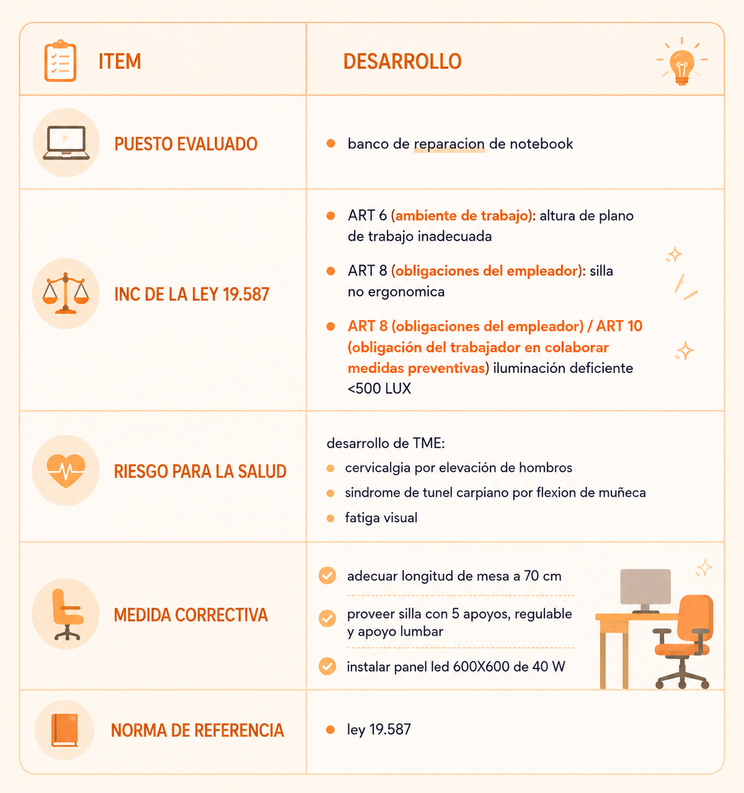

06/05 - ACTIVIDAD 5 ERGONOMIA en el puesto tecnico
CONSIGNA:
trabajan 6hs reparando netbook en
- mesa de 90cm de altura
- silla sin respaldo
- lampara que genera sombras al final siente: dolor cervical y de muñeca
PALABRAS
- TME (transtorno muscular esqueletico): lesiones por mala postura. TENDINITIS / LUMBALGIA
- Ley 19.587: ley de higiene y seguridad en el trabajo en argentina
- LUX: Unidad de medida de iluminación. un taller requiere 500 LUX minimo
- plano de trabajo: LA MESA. debe estar entre 70/75cm de altura para trabajo setado
1- 3 errores de ergonomia en el puesto descripto por ley 19.587
- altura plano de trabajo(mesa): 90cm es para trabajo en pie, sentado debe ser 70/75, obliga levantar hombros
- silla: sin respaldo y apoyo lumbar, no mantiene postura correcta de columna
- iluminacion: sombras causan fatiga visual obligan posturas forzadas
2- que es TME y como relaciona dolor de muñeca con altura de mesa
son lesiones de musculo,tendones y nervios por postura forzada.
mesa de 90 cm se debe flexionar las muñecas para arriba para reparar, comprimiendo tunel carpeteano”:inflamacion, dolor
3- proponga 3 correcciones al puesto de trabajo para cumplir las normas
- bajar mesa/silla regulable para que los codos queden 90 grados
- proveer silla con apoyo lumbar reguabre y apoyabrazos
- instalar luminaria led de 500 LUX sin sombras con lus difusa desde arriba
CUADRO DETALLADO:
